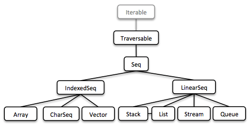
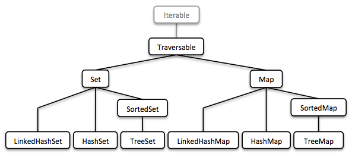
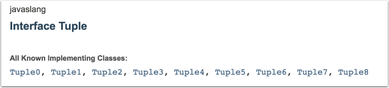
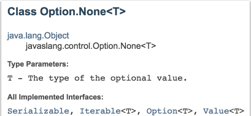
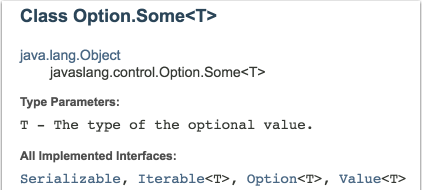
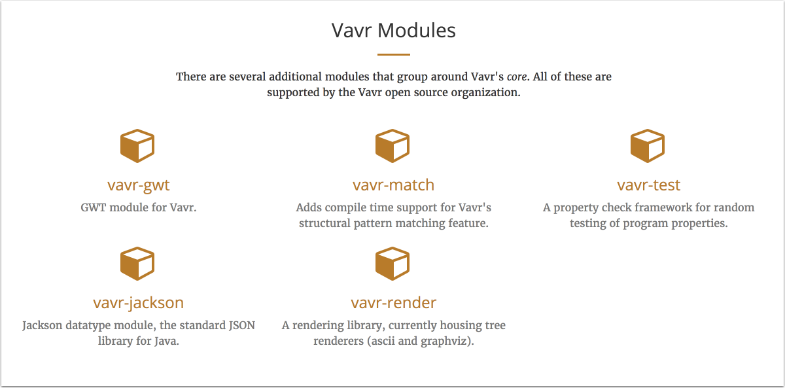

And Java becomes more functional With Javaslang!
And Java becomes more functional with Javaslang!
And Java becomes more functional with Vavr.io!
Functional Programming
What does it mean?
No more side effects!
- Functions are first-class citizens
- Immutability
- Expressiveness
- Safety
Referential Transparency
int globalValue = 0;
// No Referential Transparency
int rq(int x) {
globalValue++;
return x + globalValue;
}
//Referential Transparency
int rt(int x) {
return x + 1;
}
Referential Transparency
Other example
// No Referential Transparency
Math.random();
//Referential Transparency
Math.max(5, 42);
Java 8 & Functional Programming
- Lambda
- Stream
- Optional
- Functional Interface
- Function composition
- Collections interfaces review
There's still stuff missing
Who I am ?
So ...

Immutable Collections
It's already in JDK 8 !
Humm....
public List<Integer> unmodifiableListJdk8() {
List<Integer> jdkList = IntStream.range(0,20)
.boxed()
.collect(Collectors.toList());
return Collections.unmodifiableList(jdkList);
}
@Test
public void should_verify_behaviour_of_jdk_8_unmodifiable_list() throws Exception {
List<Integer> unmodifiableList = this.examples.unmodifiableListJdk8();
unmodifiableList.add(21);
assertThat(unmodifiableList).hasSize(21);
}
List, Array, Stream ...
Java 8 example
java.util.List<User> filterUserWithValidEmail() {
return this.usersJdk8
.stream()
.filter(user -> {
try {
return user.isEmailValid();
} catch (InvalidFormatException e) {
return false;
}
})
.collect(Collectors.toList());
} With Vavr
public List<User> filterUserWithValidAddressVavr() {
return this.usersVavr
.filter(user -> Try.of(() -> user
.isAddressValid())
.getOrElse(false));
}
An other Java 8 example
public java.util.List<Address> filterInvalidAddressFromRouenJdk8() {
return this.usersJdk8.stream()
.filter(User::isInvalidAddressFromRouen)
.map(User::getAddress)
.collect(Collectors.toList());
}
And With Vavr
public List<Address> filterInvalidAddressFromRouenVavr() {
return this.usersVavr
.filter(User::isInvalidAddressFromRouen)
.map(User::getAddress);
}
Stream consistency
Java 8
public java.util.stream.Stream<String> mapUserToLowerCaseUserNameWithJdk8Steam() {
java.util.stream.Stream<User> userNameStream = java.util.stream.Stream.of(generateUser(7), generateUser(15));
userNameStream.map(user -> user.getUserName()
.toUpperCase());
return userNameStream
.map(user -> user.getUserName().toLowerCase());
}
java.lang.IllegalStateException: stream has already been operated upon or closed
at java.util.stream.AbstractPipeline.<init>(AbstractPipeline.java:203)
at java.util.stream.ReferencePipeline.<init>(ReferencePipeline.java:94)
at java.util.stream.ReferencePipeline$StatelessOp.<init>(ReferencePipeline.java:618)
at java.util.stream.ReferencePipeline$3.<init>(ReferencePipeline.java:187)
at java.util.stream.ReferencePipeline.map(ReferencePipeline.java:186)Stream consistency
Vavr
public Stream<String> mapUserToLowerCaseUserNameWithVavrStream() {
Stream<User> userNameStream = Stream.of(generateUser(7), generateUser(15));
userNameStream.map(user -> user.getUserName()
.toUpperCase());
return userNameStream
.map(user -> user.getUserName().toLowerCase());
}
Map, Set ...
Tuple
Java 8 example
public java.util.Map<String, User> filterMapOfUserWithValidAddressJdk8() {
java.util.Map<String, User> usersMap = this.usersToMapJdk8();
return usersMap.entrySet().stream()
.filter(entry -> {
try {
return entry.getValue().isAddressValid();
} catch (InvalidFormatException e) {
return false;
}
})
.collect(Collectors.toMap((entry -> entry.getKey()), entry -> entry.getValue()));
}With Vavr
public Map<String, User> filterMapOfUserWithValidAddressVavr() {
Map<String, User> userMap = this.usersToMap();
return userMap
.filter(tuple -> Try.of(() ->
tuple._2.isAddressValid()).getOrElse(false));
}
Value Types
- Option
- Try
- Either
- Validation
- (Lazy, Future, Promise, Match)
Option
1 Interface
 Java 8 Optional
public Optional<Address> optionalOfUserAddress(String userName) {
if( !this.usersJdk8.containsKey(userName)) {
return Optional.empty();
}
return Optional.of(this.usersJdk8.get(userName).getAddress());
}
public Optional<Address> optionalOfNullUsageForUserAddress(String userName) {
return Optional.ofNullable(this.usersJdk8.get(userName))
.map(user -> user.getAddress());
}
Vavr Option
public Option<Address> optionOfUserAddress(String userName) {
return this.usersVavr.get(userName)
.map(user -> user.getAddress());
}
/* Because Map.get(key) return an Option in Vavr
Option<V>get(K var1);
*/
Try
May return an exception or a successful result
public Try tryOfUserAddress(String userName) {
return Try.of(() -> this.usersVavr.get(userName)
.get().getAddressIfValid());
}Either
Represents a value of 2 possible types
Either is either Right or Left
by convention Right refers to the nominal case
Either Example
public Either<String, User> eitherOfUser(String userName) {
return this.usersVavr.get(userName)
.toRight("Not Found");
}Validation
Errors accumulation
Processes all validations, no circuit breaking when an error is found
Example available on github
GitHub: https://goo.gl/BHcYRJFunctions
What about the first-class citizens ?
Java 8 comes with Function and BiFunction
Vavr provides functional interfaces up to 8 parameters
In fact Vavr functional interfaces are Java 8 functional interfaces on steroidsVavr documentation
Composition
Application of one function as the result of another to produce a new one
Composition example
private Function1<Option<User>, Option<String>> lastName
= user -> user.map(exist -> exist.getLastName());
private Function1<Option<String>, Option<String>> toUpperCase
= value -> value.map(string -> string.toUpperCase());
private Function1<Option<User>, Option<String>> lastNameInUpperCase
= lastName.andThen(toUpperCase);
public String userLastNameToUpperCase(String userName) {
return lastNameInUpperCase
.apply(usersJavaslang.get(userName))
.getOrElse("User Not Found");
}
Lifting
Turning a side effect function to a total function
Lifting example
private Function1<Option<User>, Address> getAddressWithSideEffect
= user -< user.get().getAddress();
private Function1<Option<User>, Option<Address>> safeGetAddress
= Function1.lift(getAddressWithSideEffect);
public Address sideEffectGetAddress(String userName) {
return getAddressWithSideEffect
.apply(usersJavaslang.get(userName));
}
public Option<Address> safeGetAddress(String userName) {
return safeGetAddress
.apply(this.usersVavr.get(userName));
}
Partial Application
Deriving a new function from an existing one by fixing some parameters
Partial Application example
private Function4 <Integer,Integer,Integer,Integer,Integer> sum
= (a, b, c, d ) -> a + b + c + d;
private Function1<Integer, Integer> partialApplicationFunc
= sum.apply(1,2,3);
public int partialApplication(int val) {
return partialApplicationFunc.apply(val);
}
Currying
Deriving a new function from an existing by fixing 1 parameter and returning a new function with arity of 1
Currying example
private Function1<Integer, Function1<Integer, Function1<Integer, Integer>>> curriedFunc
= sum.curried().apply(5);
public int currying(int val1, int val2, int val3) {
return curriedFunc.apply(val1).apply(val2).apply(val3);
}
Memoization
Kind of cache system
A function is executed only once and then returns the result from the cache
Memoization example
private Function0>Double< memoizedRandom = Function0.of(Math::random).memoized();
public double memoize() {
return memoizedRandom.apply();
}
@Test
public void should_use_memoization_to_add() throws Exception {
double firstCall = this.examples.memoize();
assertThat(List.range(0, 20)
.map(val -> this.examples.memoize()))
.allMatch(val -> val == firstCall);
}
Pattern Matching and Property checking
Pattern Matching, the Vavr way
- $() - wildcard pattern
- $(value) - equals pattern
Syntactic Sugar
- Predicate
Case(is(1), "one") - Multiple conditions
Case(isIn("-h", "--help"), ...)
Pattern Matching example
Function0<Option<String>> usageDocumentation = () -> Option.of("usage: JavaslangDemo [options] \n") ;
Function1<Option<String>, Option<String>> versionDocumentation = previous -> previous.map(prev -> prev + "-v, --version : Display version Information");
Function0<Option<String>> helpDocumentation = usageDocumentation.andThen(versionDocumentation);
Function2<Option<String>, Option<String>, Option<String>> invalidCommand = (previous, arg) -> previous.map(prev -> "Unable to parse command line option : " + arg.getOrElse("") +"\n" + prev);
public static void main( String[] args )
{
Option<String> arg = Array.of(args).headOption();
String commandDescription = API.Match(arg.getOrElse("")).of(
Case(isIn("-h", "--help"), helpDocumentation.apply()),
Case(isIn("-v", "--vesion"), versionDocumentation.apply(Option.none()) ),
Case($(), invalidCommand.apply(helpDocumentation.apply(), arg))
).getOrElse("Error when parsing argument");
System.out.println(commandDescription);
}
Another example
public List<Either<Address, Address>> patternMatchingList() {
List<User> users = this.usersVavr.map(tuple -> tuple._2).toList();
return users.map(user ->
Match(validateUser(Option.of(user))).of(
Case(Valid($()), validUser -> Either.right(validUser.getAddress())),
Case(Invalid($()), errorList -> Either.left(user.getAddress()))
));
}
Property Checking
Property Checking example
@Test
public void should_l33t_string() throws Exception {
Arbitrary<String> leetCharEto3 = Arbitrary.string(Gen.frequency(
Tuple.of(1, Gen.choose('A','Z')),
Tuple.of(1, Gen.choose('a','z'))
))
.filter(s -> s.length() > 10)
.filter(s -> s.matches("\\w*[eE]+\\w*"));
Function1<String, String> transformETo3 =
s -> s.replaceAll("[eE]", "3");
CheckedFunction1<String, Boolean> checkTransformETo3 =
s -> transformETo3.apply(s)
.matches("\\w*[^eE]+\\w*")
&& transformETo3.apply(s).contains("3");
Property.def("Each e character must be replace by a 3")
.forAll(leetCharEto3)
.suchThat(checkTransformETo3)
.check()
.assertIsSatisfied();
}
Vavr Modules
Vavr Links
Documentation: https://goo.gl/dMKKjN